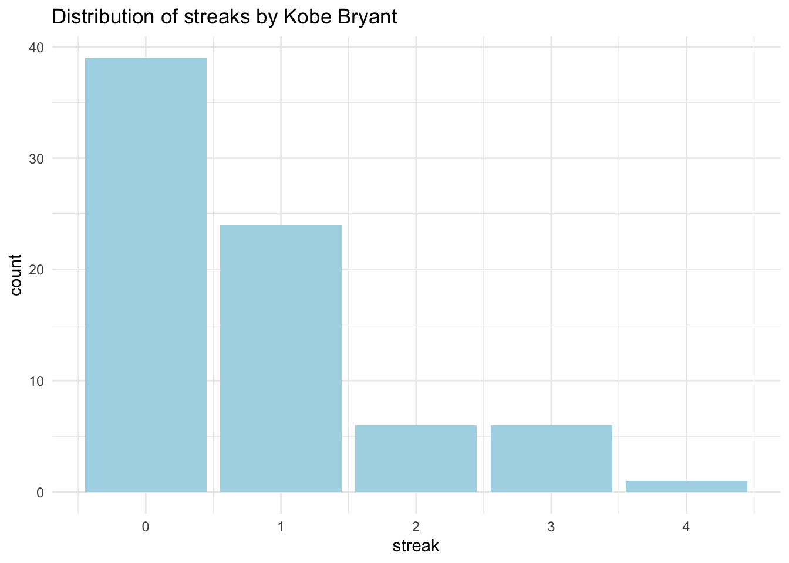
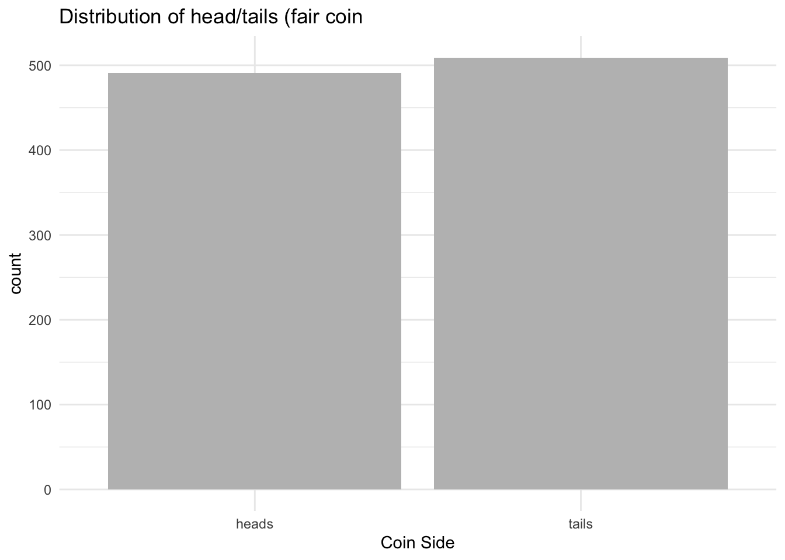
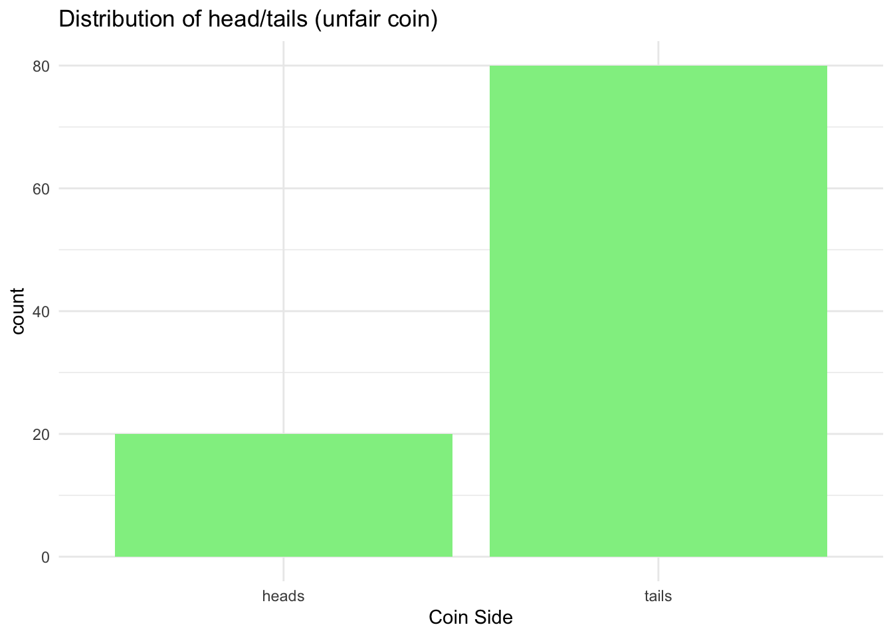
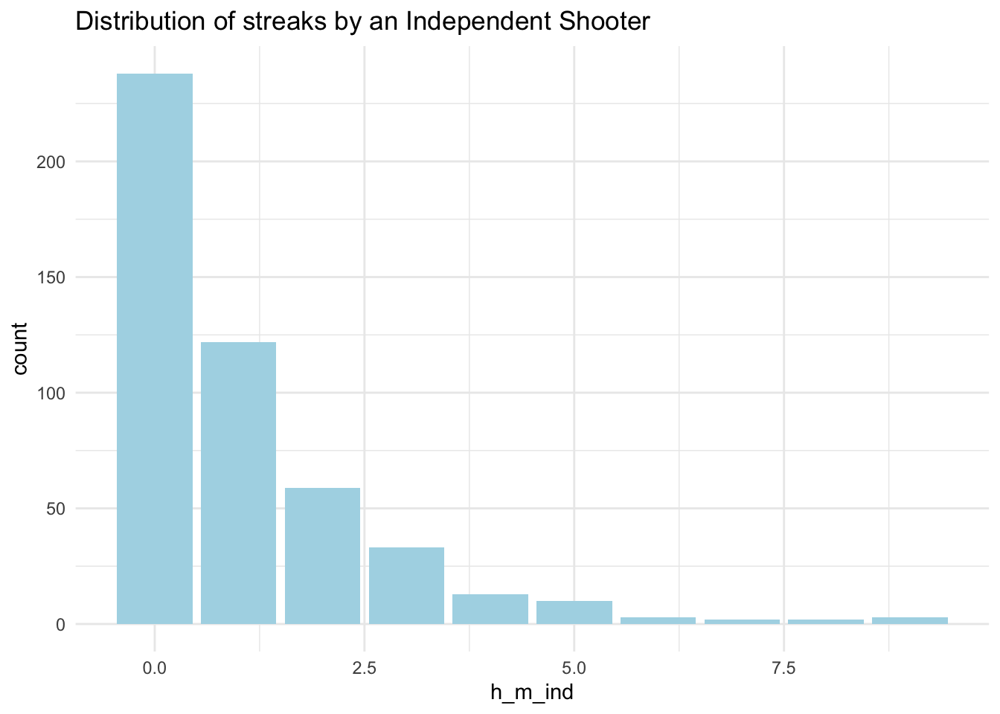
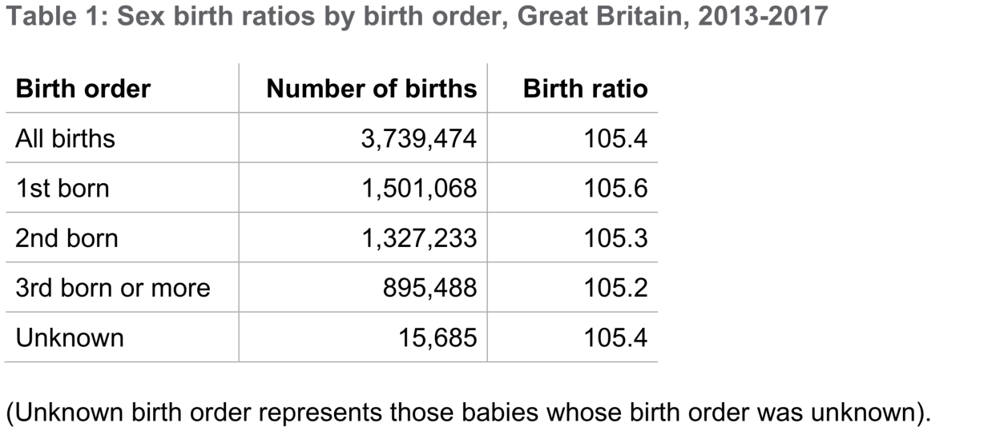
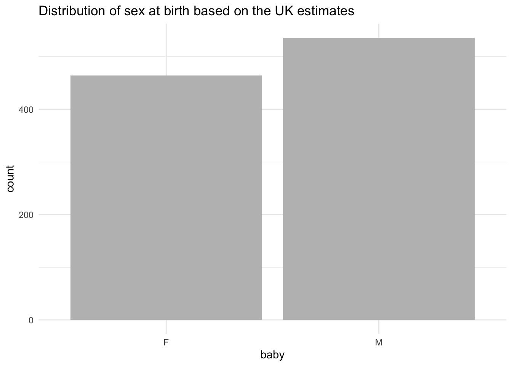
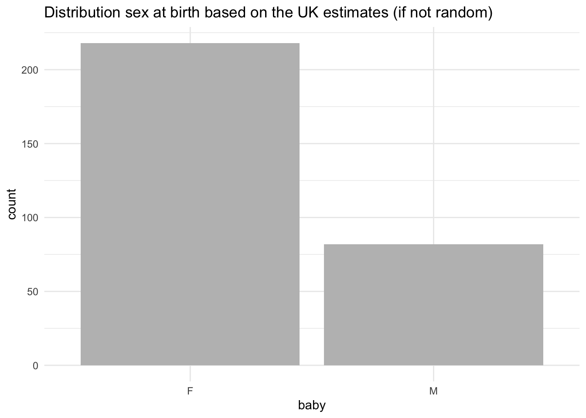

Chapter 8 Week 8
Practice.Rmd here or on Learn.
8.1 Introduction to Probability
The essential reading for this week can be found in Navarro’s Chapter 9 This week we will combine learning R with doing some basic probability calculations.
We will toss a few coins and we will also try to work out what the probability of certain events happening is, given that we draw the data at random. This could be fun but might look tricky too. The goal is to build an intutition, not to overwhelm you with probability theory.
There are few probability rules that you may want to refer to when working with basic probability examples for this week.
- The probability of an event lies in the interval [0,1]
- The probability of two events that are mutually exclusive (i.e. cannot happen at the same time) happening together can be found by adding their individual probabilities
- The probability of two independent events that are happening together can be found by muiltiplying their individual probabilities
- The sum of the probabilities of all outcomes must equal 1
The key functions we will need for today wil be sample(), tibble(), count(), table() and select().
Make sure to load tidyverse before your start.
8.2 Example 1 (hot hand)
The example is adapted from the Open Intro Statistics textbook that, by the way, has an excellent overview of basic statistics and R. Check this out here.

This example is based on the data of every shot taken by a basketball player, Kobe Bryant, pictured above. His performance against the Orlando Magic in the 2009 NBA Finals earned him quite a reputation - this lead to him being associated with a phenomenon know as ‘hot hand’. If we are keen to study this in more detail one approach would be to construct a simple distribution of his shots and study the data - we then can check that indeed Kobe does have a ‘hot hand’ meaning that he is more likely to score after a successful shot already occured.
The data comes from the textbook website and we can easily load it by using the link below:
## vs game quarter time description basket
## 1 ORL 1 1 9:47 Kobe Bryant makes 4-foot two point shot H
## 2 ORL 1 1 9:07 Kobe Bryant misses jumper M
## 3 ORL 1 1 8:11 Kobe Bryant misses 7-foot jumper M
## 4 ORL 1 1 7:41 Kobe Bryant makes 16-foot jumper (Derek Fisher assists) H
## 5 ORL 1 1 7:03 Kobe Bryant makes driving layup H
## 6 ORL 1 1 6:01 Kobe Bryant misses jumper MThere are 133 observations of Kobe Bryant’s hits and misses. We will focus on the variable basket - it has values H for hit and M for miss.
## # A tibble: 2 x 2
## basket n
## <chr> <int>
## 1 H 58
## 2 M 75The first sequence looks like this:
\[H M | M | H H M | M | M | M\] The streak length is the number of consecutive HITs until a MISS e.g. \(|H M |\) represents a streak of length 1 whilst \(|H H M |\) represents a streak of length 2. A miss on its own will represent a streak of length 0.
#Calculate streaks using the function that came with the data (calc=streak)
kobe_streak<-tibble(streak=calc_streak(pull(kobe,basket))) #note that we use pull() here to select data, variable
#Count streaks
kobe_streak %>%
count(streak)## # A tibble: 5 x 2
## streak n
## <dbl> <int>
## 1 0 39
## 2 1 24
## 3 2 6
## 4 3 6
## 5 4 1#Barplot
ggplot(data=kobe_streak,aes(x=streak))+geom_bar(fill='lightblue') + labs(title='Distribution of streaks by Kobe Bryant') +theme_minimal()
Now we can see easily what has been happening. How many hits and misses are in a streak of one? What about a streak length of 0? A streak of 0 is actually the most common. Then we have streak of length 1 - a hit (H) followed by a miss (M), almost as common as having |M M|. We have few occurences of streaks of l.
Imagine that we actually had the probability assigned. If Kobe had 58 hits out of 133 then:
\[P(shot 1 = H)=0.45\]
If Kobe indeed had a ‘hot hand’ then the probability of getting a hit after a hit, two in a row, should be even higher than getting a single hit:
\[P(shot 2 = H|shot 1 = H)=0.60\]
But if he doesn’t really have a ‘hot hand’ then the probability could also be:
\[P(shot 2 = H|shot 1 = H)=0.45\]
That means that getting a hit then a miss or two hits in a row is totally random. Later, you will study the streaks of Kobe and then compare them to an independent shooter.
We will show you an example below of how to generate a simulation of a random event and you can then try to construct your own independent shooter example. Let’s look at coin tossing as an example of a random process.
8.3 Example 2 (coin toss)
We can easily generate a toin coss in R. Why coins? Traditionally, we use coin tossing in statistics because the flip of a coin describes events with an equal chance of happening, they are random, and random processes are a great playground for probability learning.
#Lets assign some outcome variable
outcomes<-c("heads", "tails")
#We then will sample the outcomes 100 time with replacement (note: events are independent)
sample(outcomes, size = 100, replace = TRUE)## [1] "heads" "heads" "heads" "heads" "heads" "heads" "tails" "heads" "tails" "heads" "heads"
## [12] "tails" "tails" "heads" "tails" "tails" "tails" "tails" "heads" "heads" "heads" "tails"
## [23] "heads" "heads" "tails" "tails" "heads" "heads" "tails" "tails" "heads" "heads" "heads"
## [34] "tails" "heads" "heads" "heads" "heads" "tails" "tails" "tails" "tails" "heads" "heads"
## [45] "heads" "tails" "tails" "tails" "heads" "heads" "tails" "tails" "heads" "heads" "tails"
## [56] "heads" "heads" "tails" "tails" "heads" "tails" "heads" "tails" "tails" "tails" "heads"
## [67] "tails" "heads" "tails" "tails" "heads" "tails" "heads" "heads" "tails" "tails" "tails"
## [78] "tails" "heads" "tails" "tails" "tails" "tails" "heads" "tails" "heads" "heads" "tails"
## [89] "heads" "tails" "tails" "tails" "heads" "heads" "tails" "heads" "heads" "heads" "tails"
## [100] "heads"#We can also assign the simulation to an object and use count() to see the resulting distribution and the proportion
outcomes<-c("heads", "tails")
simulation_coin<-tibble(coin_side = sample(outcomes, size = 100, replace = TRUE))
simulation_coin %>%
count(coin_side)## # A tibble: 2 x 2
## coin_side n
## <chr> <int>
## 1 heads 46
## 2 tails 54You can also do the same via table() and use the results to construct a propotions table:
simulation_coin %>%
select(coin_side) %>% #select the variable to provide counts
table() %>% #table how many values are in each category
print() %>% #output the results
prop.table() # use the output to calculation the proportion## .
## heads tails
## 46 54## .
## heads tails
## 0.46 0.54Try to vary the size and see how table changes. You’ll note that as your sample size (N) approaches infinity (\(N -> +∞\)) you get closer to the true probability of the event.
# Try with the small simulation first
simulation_coin <- tibble(coin_side = sample(outcomes, size = 10, replace = TRUE))
simulation_coin %>%
count(coin_side)## # A tibble: 2 x 2
## coin_side n
## <chr> <int>
## 1 heads 5
## 2 tails 5# Or increase to a 1000
simulation_coin<-tibble(coin_side=sample(outcomes, size = 1000, replace = TRUE))
simulation_coin %>%
count(coin_side)## # A tibble: 2 x 2
## coin_side n
## <chr> <int>
## 1 heads 491
## 2 tails 509What if you have an unfair coin? By default the previous simulation assumes that we have 50/50 chance to observe ‘heads’ or ‘tails’.
You can assign different probability via simulations:
# Simulate an unfair coin
simulation_coin_unfair <- tibble(coin_side = sample(outcomes, size = 100, replace = TRUE, prob = c(0.2, 0.8))) # Note that the first outcome has probability 0.2 and the second 0.8
simulation_coin_unfair %>%
count(coin_side)## # A tibble: 2 x 2
## coin_side n
## <chr> <int>
## 1 heads 20
## 2 tails 80Lastly, plot them both to compare:
# Barplot (fair coin)
ggplot(data = simulation_coin, aes(x = coin_side)) +
geom_bar(fill = 'grey') +
labs(x = 'Coin Side', title = 'Distribution of head/tails (fair coin') +
theme_minimal()
# Barplot
ggplot(data = simulation_coin_unfair, aes(x = coin_side)) +
geom_bar(fill = 'lightgreen') +
labs(x = 'Coin Side', title = 'Distribution of head/tails (unfair coin)') +
theme_minimal()
8.4 Example 3 (Independent shooter)
We can now easily simulate a very similar draw for hits and misses we worked with earlier. We can create an independent shooter draw and compare it with the Kobe example.
# Assign some outcome variable
outcomes_h_m <- c("H", "M")
# We then will sample the outcomes 100 times with replacement
sample(outcomes_h_m, size = 133, replace = TRUE, prob = c(0.45, 0.55)) ## [1] "M" "H" "M" "M" "H" "H" "M" "H" "H" "H" "H" "M" "H" "H" "M" "M" "M" "H" "H" "H" "M" "M" "H"
## [24] "H" "M" "H" "H" "M" "M" "M" "M" "M" "M" "H" "H" "M" "H" "M" "M" "M" "M" "M" "M" "M" "H" "M"
## [47] "M" "M" "M" "H" "M" "M" "H" "H" "M" "M" "M" "H" "H" "H" "M" "M" "H" "M" "M" "M" "H" "M" "M"
## [70] "H" "M" "H" "M" "H" "M" "H" "H" "H" "M" "H" "M" "M" "H" "M" "M" "H" "H" "H" "M" "H" "M" "M"
## [93] "M" "M" "M" "H" "H" "H" "M" "H" "M" "H" "H" "M" "H" "M" "M" "M" "H" "H" "M" "H" "M" "H" "M"
## [116] "M" "H" "M" "M" "H" "M" "M" "H" "M" "H" "M" "M" "H" "H" "H" "H" "M" "M"#Lets save to a tibble
#Or increase to a 1000
simulation_h_m<-tibble(h_m=sample(outcomes_h_m, size = 1000, replace = TRUE))
simulation_h_m %>%
count(h_m)## # A tibble: 2 x 2
## h_m n
## <chr> <int>
## 1 H 516
## 2 M 484Also, a proportion:
## .
## H M
## 516 484## .
## H M
## 0.516 0.484To provide a comparison, let’s plot the distribution of streaks:
# Calculate streaks using the function that came with the data (calc = streak)
indep_streak<-tibble(h_m_ind=calc_streak(pull(simulation_h_m,h_m)))
# Barplot
ggplot(data = indep_streak, aes(x = h_m_ind)) +
geom_bar(fill = 'lightblue') +
labs(title = 'Distribution of streaks by an Independent Shooter') +
theme_minimal()
8.5 Practice Rmd. Solutions
8.5.1 Sex of the babies born in the UK
Work with the following example to study the probability of males and females being born in the UK. You can read more about the actual report [here] (https://www.gov.uk/government/statistics/sex-ratios-at-birth-in-great-britain-2013-to-2017) and check the methodologies on how people determine whether there is or isn’t evidence for sex selection at birth.
 There were 3.7 million births registered in Great Britain in this period with a ratio of males to females being 105.4. This also can be interpreted as the odds being 105.4 to 100 for males to females. \[ \frac{male}{female} = \frac{105.4}{100} \] To convert from odds to probability, divide the odds by one plus the odds. So to convert odds of 105.4/100 to a probability we can use the following: \[ {\frac{105.4}{100}}/({\frac{105.4}{100} +{\frac{100}{100}}}) = 0.51\]
From the information we were given we can then conclude that there might be a pretty random chance for baby male and baby female being registered and there is no evidence for sex selection at birth.
Can you generate a sample of 100 babies that follow this distribution and then provide us with the plot?
# Assign some outcome variable
outcomes_babies <- c("M", "F")
# We then will sample the outcomes 100 times with replacement
sample(outcomes_babies, size = 100, replace = TRUE, prob = c(0.51, 0.49)) ## [1] "M" "M" "M" "F" "M" "F" "M" "F" "F" "F" "F" "M" "M" "M" "F" "M" "F" "M" "M" "F" "M" "M" "M"
## [24] "F" "M" "F" "M" "M" "M" "M" "M" "M" "M" "M" "M" "M" "F" "F" "M" "M" "M" "M" "F" "F" "M" "M"
## [47] "M" "M" "F" "F" "M" "F" "F" "F" "M" "M" "F" "M" "F" "F" "F" "M" "F" "M" "F" "F" "F" "F" "M"
## [70] "F" "F" "F" "M" "M" "F" "F" "F" "F" "M" "F" "M" "M" "F" "M" "F" "M" "F" "F" "F" "F" "M" "M"
## [93] "M" "F" "M" "F" "F" "M" "F" "F"# Or increase to 1000 and put into a tibble
simulation_babies<-tibble(baby=sample(outcomes_babies, size = 1000, replace = TRUE, prob = c(0.51,0.49)))
simulation_babies%>%
count(baby)## # A tibble: 2 x 2
## baby n
## <chr> <int>
## 1 F 464
## 2 M 536To provide a comparison, let’s plot as well:
# Barplot
ggplot(data = simulation_babies, aes(x = baby)) +
geom_bar(fill = 'grey') +
labs(title = 'Distribution of sex at birth based on the UK estimates') +
theme_minimal()
What if there were differences? Assign the probabilities as 0.3 and 0.7 and see what happens:
# Change the probabilities as if not random
simulation_babies <- tibble(baby = sample(outcomes_babies, size = 300, replace = TRUE, prob = c(0.30, 0.70)))
simulation_babies%>%
select(baby) %>%
count(baby)## # A tibble: 2 x 2
## baby n
## <chr> <int>
## 1 F 218
## 2 M 82To provide a comparison, let’s plot as well:
# Barplot
ggplot(data = simulation_babies, aes(x = baby)) +
geom_bar(fill = 'grey') +
labs(title = 'Distribution sex at birth based on the UK estimates (if not random)') +
theme_minimal()
Try to play with it by resimulating your data and plot again. You will note that there is likely to be a switch between the two bars when we have a random event but a stronger tendency towards differences when the probability was pre-determined.
8.6 Pen and Paper Exercises
Work with pen and paper on these ones. Try to calculate a few probabilities given the information below - go to your lab notes where necessary.
8.6.1 Boys and girls paradox (Mr. Jones and Mr. Smith)
The Boy or Girl paradox, also known as The Two Child Problem, comes from a problem set up in the 1950s that asks two questions about the children of Mr. Jones and Mr. Smith. It was first featured by Martin Gardner in October 1959 in the “Mathematical Games column” in Scientific American. The paradox comes as follows:
- Mr. Jones has two children. The older child is a girl. What is the probability that both children are girls?
- Mr. Smith has two children. At least one of them is a boy. What is the probability that both children are boys?
How would you calculate these given the information you have just been given? It is a bit tricker then one may think.
The answer could easily be 50/50 but it can also vary given how much extra information we know. Whenever we are calculating probabilities for real world events we do need to make certain assumptions. If it is a random event, then:
- Each child is either male or female.
- Each child has the same chance of being male as being female (50/50).
- The sex of each child is independent of the sex of the other - there is no conditional effect.
Given this, there are four possible options, and for Mr.Jones we can immediately eliminate the last two:
- Older Child = Girl, Younger Child = Boy
- Older Child = Girl, Younger Child = Girl
- Older Child = Boy, Younger Child = Boy
- Older Child = Boy, Younger Child = Girl
But what about Mr.Smith? We can’t really know the combination so perhaps there could be three options, which will lead to the probability of the second child being a boy being \(1/3\) or \(0.33\) - can you tell which ones we would keep to calculate these?
- Older Child = Girl, Younger Child = Boy
- Older Child = Girl, Younger Child = Girl
- Older Child = Boy, Younger Child = Boy
- Older Child = Boy, Younger Child = Girl
A very nice article that discussed the paradox was written by Peter Lynch in 2011, titled ’The Two-Child Paradox: Dichotomy and Ambiguity’: quite worth having a look! :)
8.6.2 Rugby captain
A rugby team contains 6 Englishmen, 4 Welshmen, 8 Irishmen and 2 Scotsmen. If the captain is chosen at random, find the probability that he is:
- Scottish
- Welsh
- Irish or Scottish
- Not Scottish
8.6.3 Answers
Calculate the size of the team first by adding all up:
\[ 6 + 4 + 8 + 2 = 20 \] Then you will have:
- \(Welsh = \frac{4}{20}\)
- \(Scottish = \frac{2}{20}= \frac{1}{10}\)
- \(Irish | Scottish = (\frac{8 + 2)}{20} = \frac{10}{20} = \frac{1}{2}\)
- \(Not Scottish = \frac{(6 + 4 + 8)}{20} = \frac{18}{20}\) or also (total probability =1 , then \(1 - \frac{2}{20} = \frac{20}{20} - \frac{2}{20} = \frac{18}{20}\)
8.6.4 Defective
A batch of ten electronic components contains three that are defective. If two components are selected from the batch, find the probability that:
- Both are defective
- Neither is defective
- At least one is defective
8.6.5 Answers
- Both are defective
The probability that the first component we pick is defective is \(\frac{3}{10}\). We set that defective component, once we determined it, aside and look at the box again.
We now have \(\frac{2}{9}\) probability of getting a defective one (since we picked a component, the total has gone down from 10 to 9, and since we picked a defective one, there are now only 2 defective components in the box).
To combine probability we multiply: \[(\frac{3}{10})*(\frac{2}{9}) = (\frac{6}{90}) = \frac{1}{15}\]
- Neither is defective
The same process, but we are now looking at the 7 out of 10 non-defective parts. Probability of picking the first working part: \(\frac{7}{10}\). Which leaves \(\frac{6}{9}\) working parts in the box. Then: \[ (\frac{7}{10})*(\frac{6}{9})=(\frac{7}{10})*(\frac{2}{3})=(\frac{14}{30})=\frac{7}{15}\]
- At least one is defective
The easiest here is to profit from the rule where \(P(E) + P(E') = 1\) where:
- \(P(E)\) is the probability of event to occur
- \(1 - P(E) = P(E')\) is the probability of the event not to occur
In words: 1 - Probability(No part defective) = Probability(Some part defective)
So we can take the total probability of everything (1) and take away the probability that neither is defective. That leaves us with any case of having one or two defective parts:
\[1 - (\frac{7}{15}) = (\frac{15}{15}) - (\frac{7}{15}) = \frac{8}{15} \]